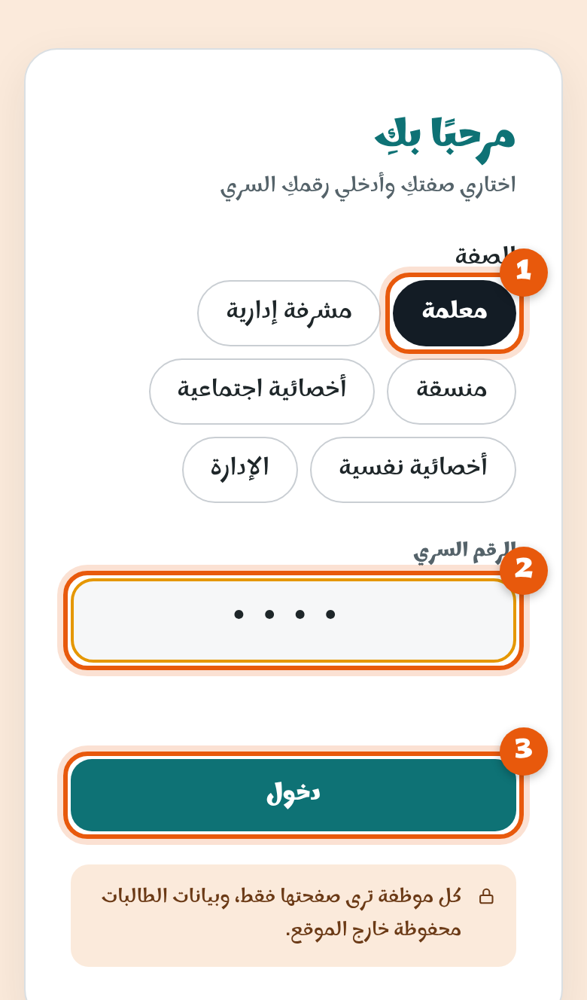

1
افتحي المنصة وسجّلي الدخول
افتحي الرابط:
althasair.github.io/namoos
- 1اختاري صفتكِ: معلمة.
- 2اكتبي رقمكِ السري — هو نفسه رقمكِ في منصة الميزان.
- 3اضغطي دخول.
رقمكِ السري خاص بكِ، لا تشاركيه مع أحد. وإذا نسيتِه تواصلي مع الإدارة.
